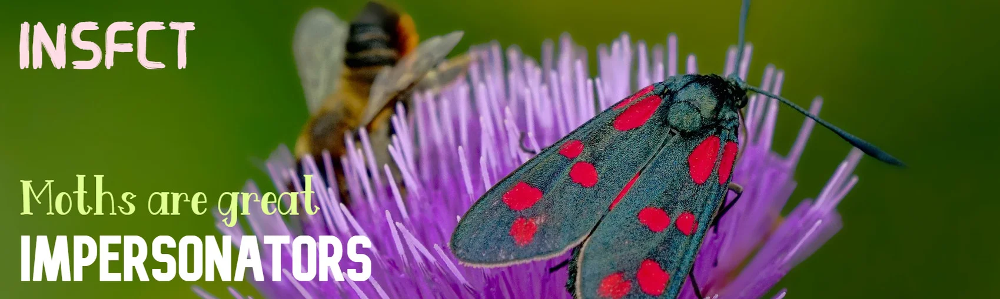
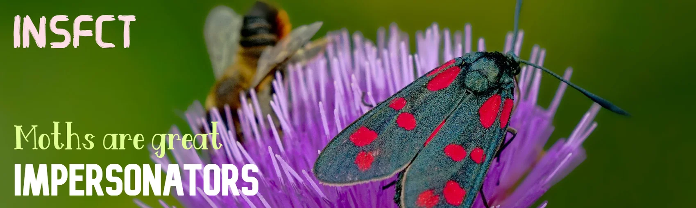

Crustaceans form a large, diverse subphylum of phylum Arthropoda. This class includes some of the more familiar Arthropods including Barnacles, Copepods, Crabs, Prawns,Lobsters and Wood Lice. Despite such an extraordinary diversity of species, many crustaceans have a similar structure and way of life.
July 5, 2020
Let’s think of a hypothetical world with no arthropods around. The first thought to many would be “Glad those gross little creatures won’t haunt anymore!” There would no longer be mosquitoes...

July 5, 2020
We have all seen these tiny little creatures around us so many times, they can be seen inside your house, park, or office, they are everywhere. They have so many diverse and fascinating forms...

 
